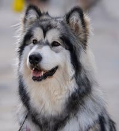
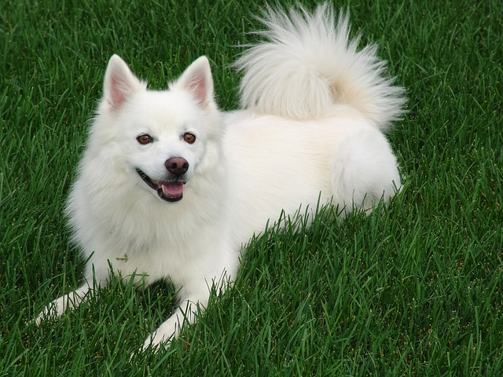
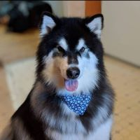
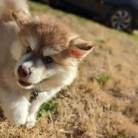
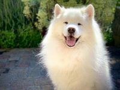
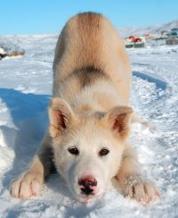

Summit Farms Rescue

Available for Adoption

Orion
- Breed: Malamute
- Age: 2 years
- Sex: Neutered Male
- Good with: Other dogs, Kids 6 and older
- Prefers home without: Kids 5 and under, Cats
- About: A big goof ball and full of energy, Orion doesn't always know how big he is. He will need help learning his manners (low to moderate training) and keeping his coat clean and tangle-free (moderate to high grooming).

Lace
- Breed: American Eskimo
- Age: 3 years
- Sex: Spayed Female
- Good with: Other dogs, All kids, Cats
- About: A sweet, fun-loving girl, Lace loves everyone. She will do almost anything for treat or praise (low training), but will need your help to keep her looking her best (high grooming).

Brock
- Breed: Malamute
- Age: 4 years
- Sex: Neutered Male
- Good with: Other dogs, Cats, Kids
- About: Brock is a handsome, good boy! He enjoys the outdoors and couch snuggles. (Many thanks to Alicia Michelle for allowing use of this photo.)

Bumi
- Breed: Malamute
- Age: 4 months
- Sex: Neutered Male
- Good with: Other dogs, Cats, Kids
- About: Bumi may be a little ball of fluff for now, but he will grow into an extra-large dog. Puppies require work, dedication, and lots of love (high training). This little guy is sure to grow into a big love-bug like his brother, Brock, with his owners' guidence and care. (Thanks again to Alicia Michelle for allowing use of this picture.)

Flurry
- Breed: Samoyed
- Age: 1 year
- Sex: Spayed Female
- Prefers a Home Without: Other dogs, Cats, Kids
- About: Flurry is the queen and she knows it! This girl is large and in charge and will need an experienced owner to help her learn her canine manners (high training). Flurry has had a rough start at life, but with some patience, love, exercise, and lots of consistency, she will make an amazing companion. Experience with large-breeds required, Samoyed experience preferred.

Raine
- Breed: Greenland Dog
- Age: 6 months
- Sex: Spayed Female
- Good with: Other dogs, Cats, Kids
- About: Raine is an active puppy with lots to learn and energy to burn (high training). She is treat-motivated and eager to please, and would do well with activities like agility or scent work to keep her mind and body busy.